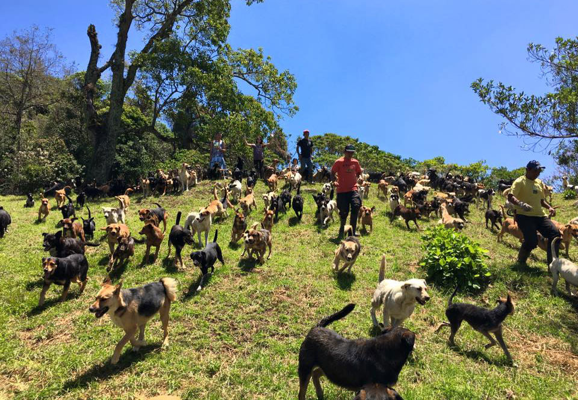

QUIENES SOMOS
Somos un grupo de personas que llevaron a cabo un empredimiento del que vos podes ser parte. Se trata de un refugio de perros en situacion de calle, nosotros rescatamos, y brindamos los cuidados que el perro necesita. Una vez que se encuentra en condiciones despues de haber recibido el tratamiento adecuado. Llega tu parte. Podras venir a conocer a todos nuestros amigos y podras elegir para poder adoptar uno.

nuestro refugio
Nuestro refugio, mejor conocido como la granja, es un lugar que cuenta con 3 espacios abiertos donde todos los dias tenemos jugando de aca para alla a mas de 20 perros que rescatamos para poder cuidarlos y darles una mejor vida. En nuestra graja estan cuidados por nuestros equipo. Contamos con dos veterinarios y diez cuidadores. Quienes se encargan del dia a dia de nuestros amigos
